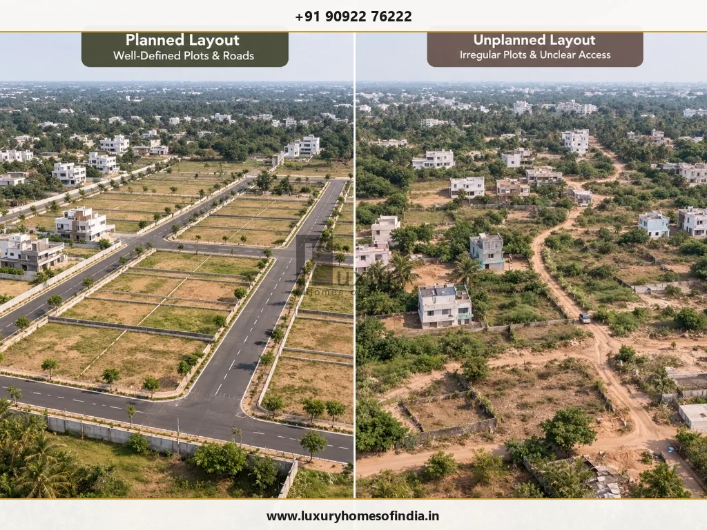

A DTCP-approved plot generally forms part of a layout or subdivision that has received the required planning approval from the competent authority. An unapproved plot lacks the required approval or has a status that has not been verified. For anyone planning to build a custom home in Tamil Nadu, the difference matters because planning approval, legal ownership, permitted land use and building permission are separate issues. Before buying, identify the authority responsible for the property, verify the actual approval order and approved layout plan, check the title and land records, and confirm whether your intended house can comply with applicable development rules. Some unapproved plots may qualify for regularisation, but eligibility is conditional and must be confirmed under the current rules. A registered sale deed or patta alone does not establish layout approval or guarantee permission to build.
1. What is a DTCP-approved plot?
A DTCP-approved plot is commonly understood to mean a residential plot within a layout or subdivision that has obtained the required approval from the Directorate of Town and Country Planning or the competent planning authority, as applicable.
Layout approval concerns how land is divided and planned for development. Depending on the applicable framework, the approved plan may show plot boundaries, internal roads, access arrangements and land reserved for specified purposes.
However, the phrase “DTCP-approved” in a property advertisement is not sufficient evidence. Buyers should obtain the relevant approval order and plan and verify that the documents correspond to the actual property being offered for sale.
2. DTCP approval vs CMDA approval
Tamil Nadu has different planning jurisdictions. The Chennai Metropolitan Development Authority (CMDA) has a planning role within the Chennai Metropolitan Planning Area, while DTCP and other competent authorities serve relevant areas elsewhere.
The appropriate authority must be identified using the exact location and applicable jurisdiction. A property described as being near Chennai should not automatically be assumed to fall under a particular authority.
Official CMDA Approval Portal
Buyers can begin by checking the official CMDA planning-permission approval records for properties within the Chennai Metropolitan Planning Area.
3. What is an unapproved plot?
An unapproved plot is one for which the required planning approval is absent or has not been established through verifiable records.
This does not automatically settle every question about ownership or future development. A property may have a registered sale deed or revenue records while its layout approval remains unresolved.
Before making a decision, distinguish between these situations:
- A plot included in a verified approved layout.
- A plot in an unapproved layout or subdivision.
- A plot with an application for regularisation but no final order.
- A plot covered by a final regularisation order, subject to its terms.
- A plot whose approval status remains uncertain.
These categories are not interchangeable. The relevant documents and the competent authority's records determine what can be established about the individual plot.
4. DTCP-approved vs unapproved plot: Key differences

| Factor | Approved Plot | Unapproved Plot |
|---|---|---|
| Planning status | Required approval can be verified | Approval is absent or unresolved |
| Layout plan | Should correspond to an authentic approved plan | Approved layout records may be missing or inapplicable |
| Building permission | Separate approval for the proposed house may still be required | Planning issues may need resolution before development can proceed |
| Access and roads | Compare the site with the approved plan and access rights | Access and road conformity require closer investigation |
| Regularisation | Generally unnecessary for the same approved layout status, but other issues can remain | May be possible only if the property satisfies applicable eligibility conditions |
| Due diligence | Check title, boundaries, land use and construction feasibility | Check those matters plus approval status, restrictions and any regularisation order |
| Purchase decision | Lower uncertainty about the documented layout status, not a guarantee of a safe transaction | Additional planning, legal and financial uncertainty may arise |
Note: An approved layout is a useful planning indicator, not a guarantee of clear title, utility availability or permission for a particular house design.
5. Why layout approval matters when planning a house
A plot is not suitable for a home simply because its advertised area and price look attractive. Its legal boundaries, access, land-use status and development constraints affect what can be built.
Roads and legal access
Check the road shown in the relevant layout plan, its relationship to the plot and the legal basis for access. A road visible on the ground does not, by itself, prove that all access and planning requirements are satisfied.
Plot dimensions and boundaries
Match the survey numbers, plot number, dimensions and boundaries across the approval documents, title records and physical site. Discrepancies should be investigated before the purchase proceeds.
Reserved spaces and restricted land
Identify any open-space reservation (OSR), public-purpose land, waterbody, government land classification or proposed road alignment affecting the property. Do not assume that land shown as a common or reserved area can be purchased or developed as an ordinary residential plot.
Infrastructure and site conditions
Verify the actual availability of water, electricity, sewerage or other relevant services. Also examine access, site levels, drainage and the physical constraints that may influence the proposed building.
Feasibility of the intended house
A plot may be documented correctly yet still be unsuitable for a particular design. Its dimensions, orientation, access and applicable setbacks can affect the usable building footprint, room arrangement, parking, outdoor spaces and service areas.
Before committing to a plot for a customised home, have an appropriately qualified professional assess whether the intended design can meet the applicable development controls.
6. What are the risks of buying an unapproved plot?
The consequences depend on the property's circumstances. The following risks should be investigated rather than assumed to apply identically to every unapproved plot.
- Difficulty obtaining building permission: An unresolved planning status may prevent the buyer from proceeding directly to the required building approval. Confirm the applicable route before planning construction.
- Regularisation may be unavailable: Regularisation is not automatic. Eligibility depends on the applicable rules, the property's history and characteristics, and any restrictions affecting the land.
- Uncertain access or boundaries: Incomplete layout records, inconsistent dimensions or disputed access can complicate both purchase and development.
- Additional time and expense: Obtaining records, correcting discrepancies, seeking legal advice or pursuing an eligible application can involve additional work. Do not rely solely on a seller's assurance that approval will be straightforward.
- Financing and resale complications: Missing or inconsistent planning documents may create additional questions for future purchasers, lenders or professional advisers.
- Restrictions affecting the land: Public waterbodies, government land, reserved spaces and proposed infrastructure alignments are examples of matters that require careful verification. Certain categories are excluded from the Tamil Nadu regularisation framework; buyers should check the current applicable provisions rather than assume an irregularity can be resolved.
7. How to verify whether a plot is approved (7-Step Checklist)
Use this checklist before paying a non-refundable advance or making another significant commitment.
7-Step Verification Checklist for Homebuyers
- Step 1: Identify the competent planning authority. Confirm the exact village, locality, survey numbers and jurisdiction. Determine whether CMDA, DTCP, a local planning authority or another competent authority is responsible for the relevant approval.
- Step 2: Obtain the approval order and plan. Request the relevant approval documents, reference number and layout plan. Use the competent authority's official records or office to verify them.
- Step 3: Match the individual plot. Check that the plot being sold appears in the relevant plan and that its number, survey references, dimensions and boundaries correspond to the documents. Approval of a neighbouring layout is not proof that the plot in question is included.
- Step 4: Review ownership and encumbrances. Ask a qualified property lawyer to examine the title chain, sale deed, encumbrance certificate and relevant land records. Revenue records are useful, but they are not substitutes for planning approval or a complete title review.
- Step 5: Investigate land use and restrictions. Check permitted use and relevant restrictions, including reserved land, waterbodies, road alignments and other applicable development controls.
- Step 6: Assess the proposed house. Have a registered architect or other appropriately qualified professional evaluate the site against the applicable building rules. Confirm the potential building footprint, setbacks, access and other requirements relevant to the intended design.
- Step 7: Confirm the status before proceeding. If approval or regularisation is unresolved, obtain written clarification from the competent authority where available and independent professional advice before committing to the transaction.
8. Can an unapproved plot be regularised in Tamil Nadu? (2026 Rules)
Some unapproved plots may qualify under the Tamil Nadu Regularisation of Unapproved Layouts and Plots Rules, 2017, as amended. Regularisation depends on the applicable eligibility conditions and restrictions. It must not be treated as a guaranteed remedy for every unapproved property.
The original framework includes a historical cutoff of 20 October 2016 for relevant registered sale or title deeds. The exact application of this condition must be checked against the current rules and the property's circumstances.
What did the 2026 amendment change?
The January 2026 amendment to Rule 25 provides for online applications by eligible individual plot owners at any time in the cases covered by that rule, while eligible layout promoters were required to apply by 30 June 2026.
As of October 2026, that promoter deadline has passed. This does not mean that all individual plots qualify, nor does it establish that any particular application will be approved.
Tamil Nadu Gazette & CMDA Portal Records
Read the relevant official Tamil Nadu Gazette listing and verify current consolidated rules with the competent authority.
For properties covered by the CMDA-area process, consult the official CMDA regularisation portal.
What should a buyer check for regularisation?
- Whether the plot falls within the applicable eligibility framework.
- Whether the required registered deed and other records meet the relevant conditions.
- Whether the property falls within an excluded or restricted land category.
- Whether the application relates to an individual plot, subdivision or layout.
- Whether a final regularisation order has actually been issued for the relevant property.
An application acknowledgement or an in-principle layout approval should not be represented as final regularisation of the individual plot.
9. Does an approved plot mean you can start building immediately?
No. Layout approval and permission for a specific building are different matters.
Before construction, establish the requirements that apply to the proposed house, which may include:
- Permitted land use.
- Required setbacks and open spaces.
- Building height and floor configuration.
- Plot coverage and built-up area.
- Access and road-related requirements.
- Structural and other technical provisions.
- Additional clearances, where applicable.
The permitted design depends on the property, the proposed building and the rules in force. A layout approval does not automatically authorise a particular villa design or building configuration.
Planning a Custom Luxury Home on Your Plot?
Ensure your plot feasibility, planning approvals, and architectural designs align seamlessly before construction begins. Consult with LHI's expert turnkey engineering team.
Book a Technical Plot Assessment10. Buyer checklist before paying an advance
- Identify the competent planning authority.
- Obtain and verify the relevant approval order and plan.
- Match the exact plot to the approved records.
- Check survey numbers, dimensions and boundaries.
- Obtain an independent title and encumbrance review.
- Confirm permitted land use and investigate restrictions.
- Verify legal access and road status.
- Check actual utility availability and site conditions.
- If unapproved, obtain professional advice on regularisation eligibility.
- Assess feasibility for the intended house.
- Confirm the required building permission and other clearances.
- Have a qualified professional review the proposed purchase conditions.
Do not make an irreversible financial commitment based only on a property brochure, online listing or verbal assurance.
11. Frequently asked questions
Make plot verification the first step in your home-building journey
An approved layout can provide greater clarity about planning status, but a sound purchase decision also requires title verification, permitted-use checks, confirmation of access and an assessment of the house you intend to build.
An unapproved plot may be eligible for regularisation, but neither eligibility nor final approval should be assumed. Resolve these questions before committing to the land or investing heavily in design and construction planning.
For a future custom home, the practical objective is to choose land that is not only documented appropriately but also suitable for the intended building under the applicable rules. Independent legal and technical review can help identify issues before they become costly obstacles.
Disclaimer: This article provides general property information, not legal advice. Verify the current rules and the specific plot's status with the competent authority and qualified professionals before purchasing.